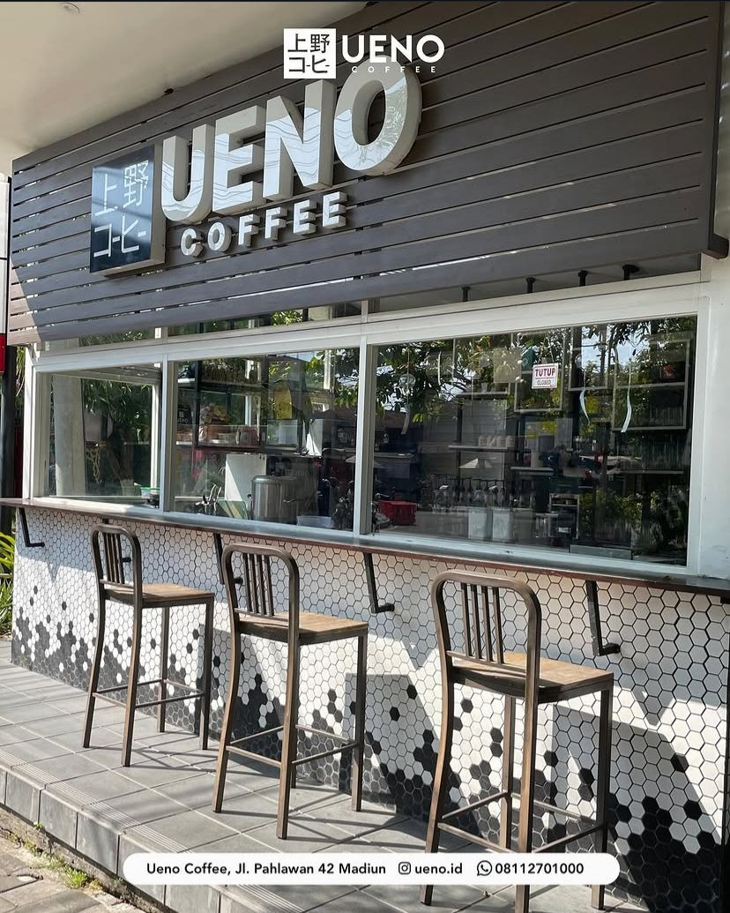
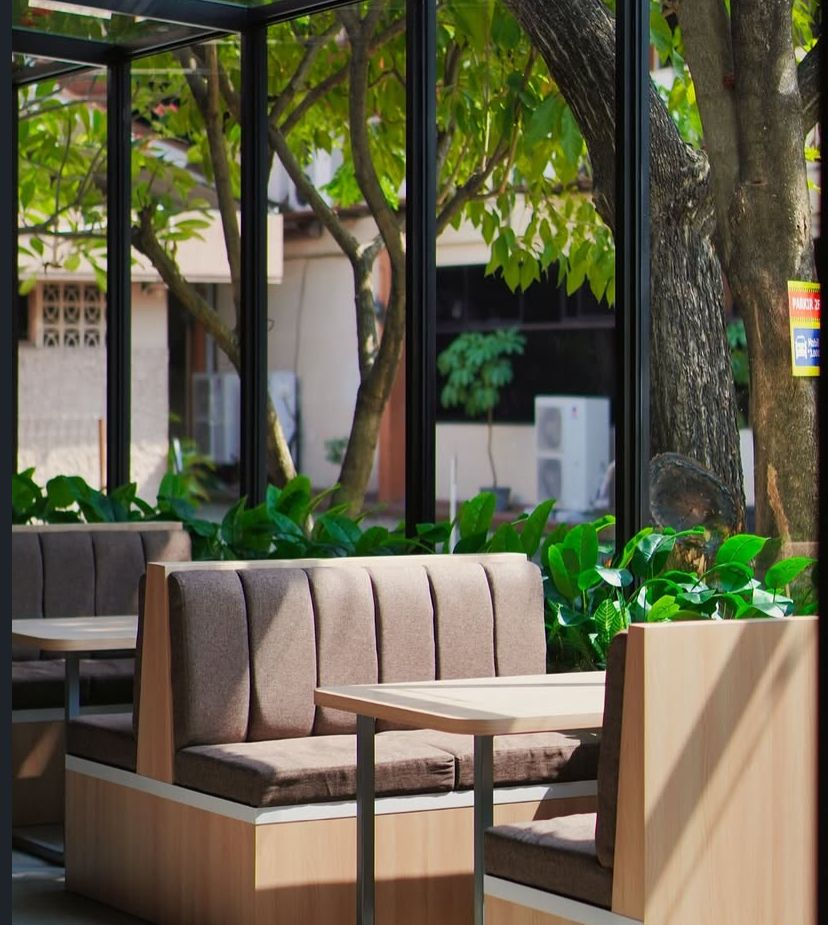
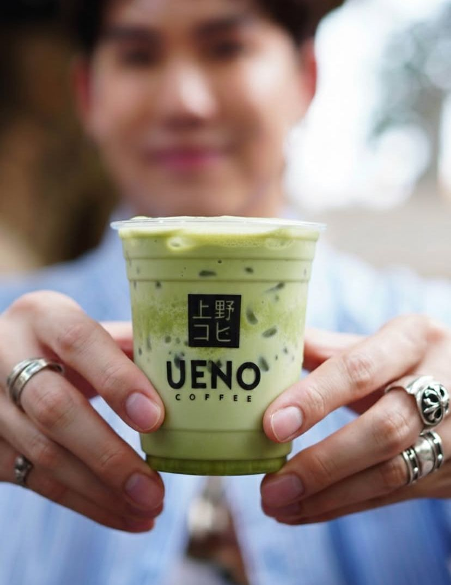
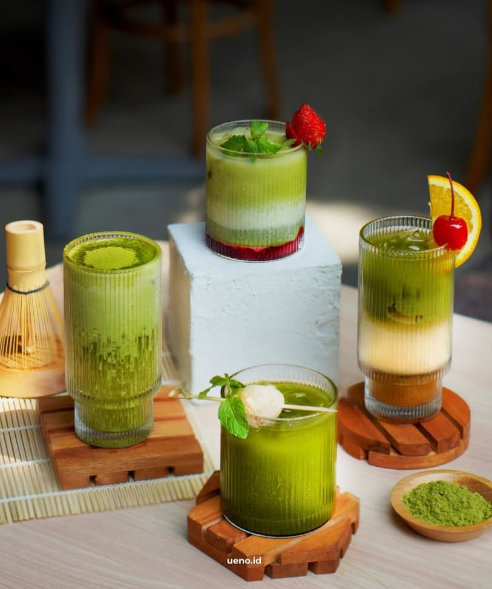
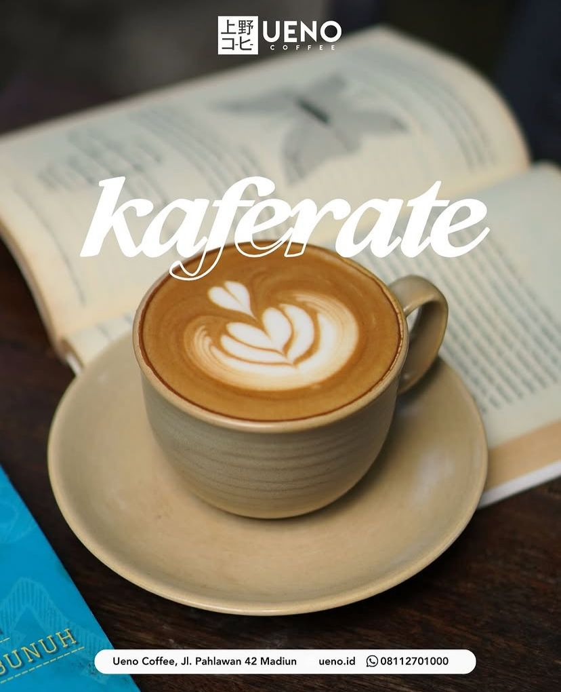
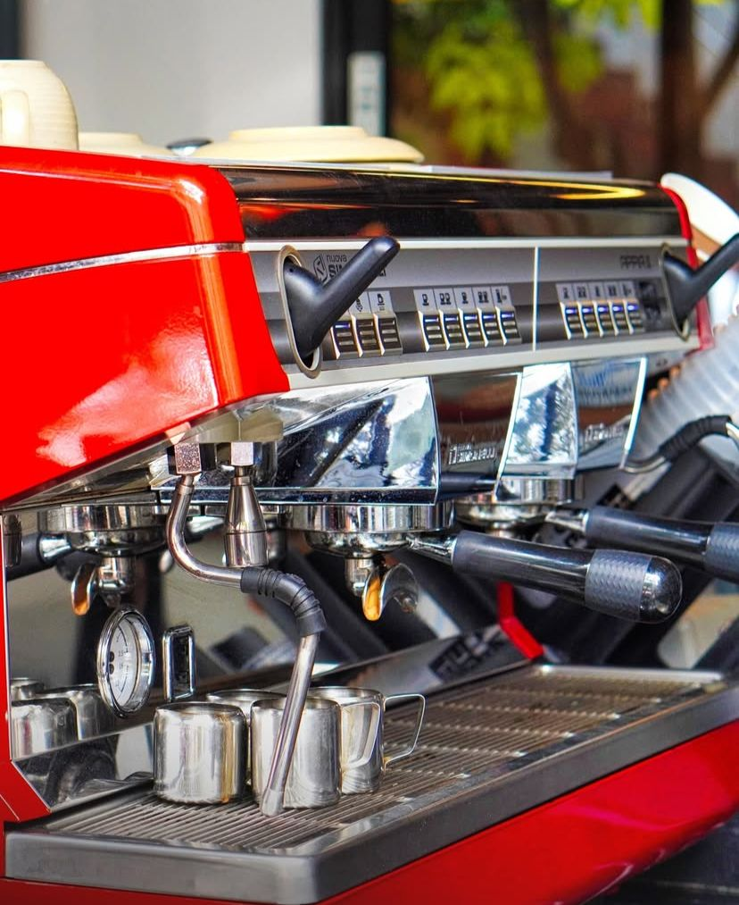
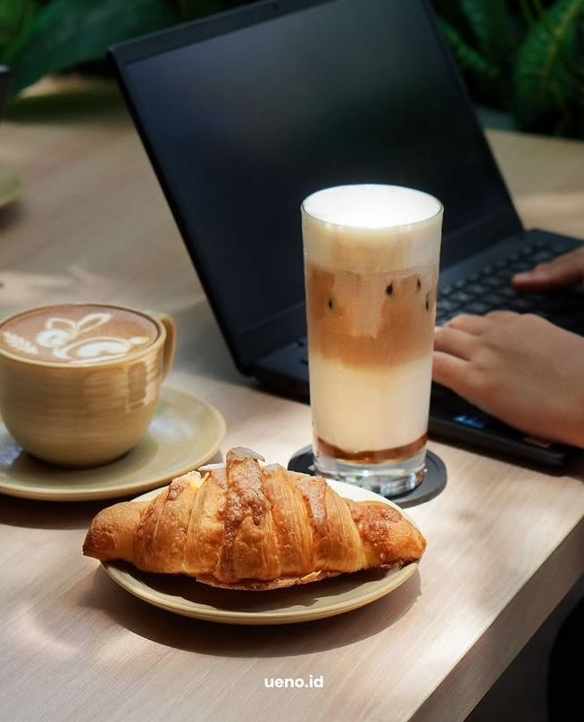

Temukan harmoni dan ketenangan di tengah kota. Ueno menawarkan suasana Japanese Minimalist, wifi kencang, dan racikan kopi artisan untuk pengalaman ngopi terbaik di Madiun.

Lebih dari sekadar tempat ngopi Madiun, Ueno Coffee lahir dari apresiasi mendalam terhadap ruang dan waktu. Kami merancang setiap sudut kafe kami di Madiun sebagai tempat untuk jeda sejenak dari hiruk-pikuk.
Dikenal sebagai salah satu kafe hits Madiun, kami memadukan estetika minimalis dengan kehangatan khas kota ini. Ruang yang tenang, cahaya alami, dan kopi enak Madiun menjadi sajian utama kami.



Kopi artisan dan pastry pilihan, dikurasi khusus untuk waktu istirahat terbaik Anda di kafe di Madiun.

Smooth, creamy, and perfectly balanced.

Highlighting the unique notes of local beans.

Buttery, flaky, and baked fresh daily.
Pusat produktivitas bagi digital nomad dan mahasiswa yang mencari kafe di Madiun untuk WFH.
Desain minimalis Jepang untuk ketenangan dan fokus maksimal.
Biji kopi pilihan yang diproses secara etis dan disangrai sempurna.
"The best place to work in Madiun. The WiFi is fast, and the coffee is actually specialty grade. A hidden gem."
— Adit, Freelance Designer
"I love the minimalist vibes. It's so quiet and peaceful compared to other cafes. Highly recommend the V60."
— Maya, Student
Jl. Pahlawan No.42
Madiun, Jawa Timur 63121
Jam Operasional
Setiap Hari: 09:00 — 22:00
Ya, kami menyediakan internet serat optik berkecepatan tinggi khusus bagi pelanggan yang ingin bekerja dari kafe di Madiun.
Saat ini kami menggunakan sistem siapa cepat dia dapat, namun Anda bisa menghubungi kami via WhatsApp untuk pertanyaan rombongan besar.